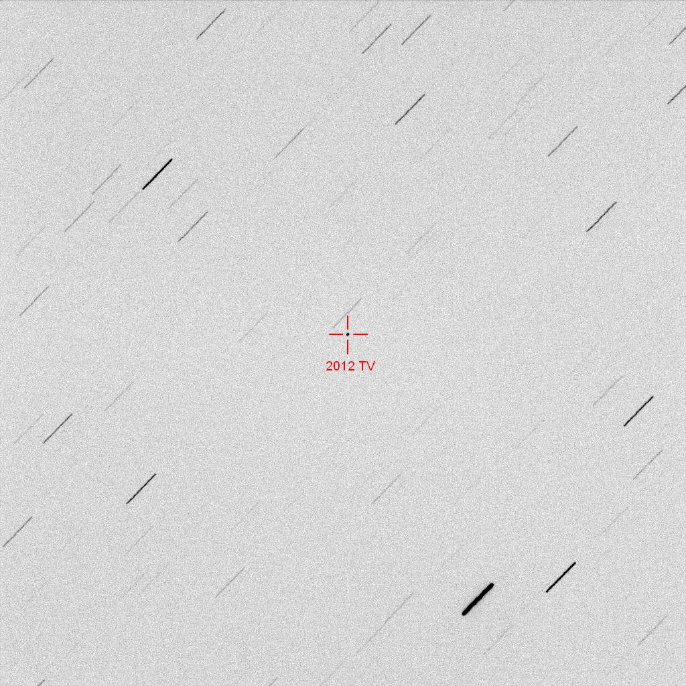
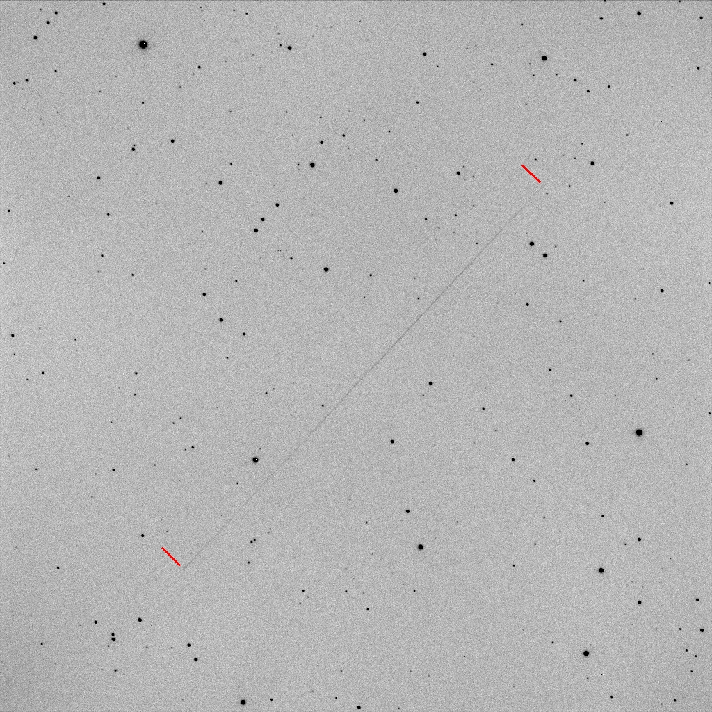

2012 TV discovered by our friends at Tenagra was imaged by the new Ritchey-Chrétien at D21. With an estimated diameter of between 20m and 40m, this fast moving NEO brightened and sped up as it headed south, coming within the orbit of our moon.
Click here to open a video of the NEO, produced using exposures of 5 seconds, taken at intervals of 15 seconds over the course of 32 images.

(click on image to enlarge)
The trailed image below shows the movement of 2012 TV during a 120s exposure. The length of the trail is approximately 24.08 arc minutes. The speed of the NEO at the time the image was taken (13:24 UT) is approximately 289 degrees per day.
2012 TV continued to accelerate reaching about 320 degrees per day at its closest approach of about 256,000 km at around 15:02 UT.
The trailed image appears to show a discernible magnitude change over the relatively short exposure (brightening then dimming during the length of the trail), suggesting that 2012 TV rotates quickly.
